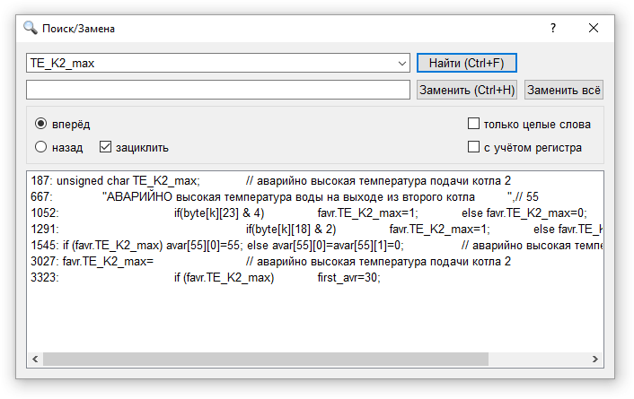
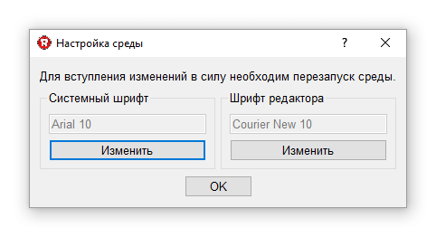
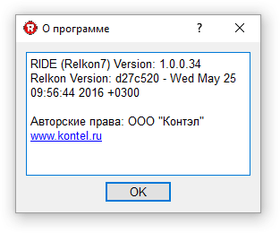

Меню содержит следующие разделы:
В разделе Файл размещаются стандартные операции работы с проектом.
Для понимания структуры проекта ниже приведено назначение его файлов.
Основным стержнем проекта является файл с расширением kon. В нём содержится текст программы на языке Relkon. Содержимое пульта хранится в файле с расширением lcd. Настройки проекта хранятся в файле с расширением sfr.
В папке back хранятся резервные копии файлов kon и sfr. Каждый раз при компиляции проект автоматически сохраняется, а в папку back записываются копии файлов (в случае если были внесены изменения с момента последнего сохранения). С интервалом в пол часа папка back автоматически очищается. Остаются только последние 10 версий файлов kon и sfr.
В файле с расширением inp хранится состояние дискретных и аналоговых входов контроллера, значения переменных. Они сохраняются и загружаются с помощью отладчика и позволяют ускорить отладку работы контроллера в режиме эмуляции (программного имитирования входных сигналов контроллера).
Большая группа файлов хранится в папке build.
В файлах с расширением elf и bin содержится двоичный код программы, который непосредственно и загружается в контроллер. Ошибки сборки проекта (при их наличии) хранятся в файле build.log. В файле size.log размещается информация о расходовании памяти контроллером. В map файле находится распределение адресов переменных в памяти контроллера. Настройки отладчика хранятся в файле ..._debug.xml. Файл variables.xml хранит список переменных, опрашиваемых отладчиком в паре с их значениями. Его можно использовать для хранения наборов различных конфигураций контроллера.
В разделе файл отдельного комментария заслуживают пункты Import и Export.
С помощью команды Import можно преобразовать проект версии Relkon 6.x в проект версии Relkon7.x. Среда предложит выбрать папку проекта Relkon 6.x. После этого внутри этой папки будет создан каталог Relkon7_project с преобразованным проектом.
Команда Export предназначена для создания по данным текущего проекта файла с расширением rp6. Он необходим для дизайнера сенсорных панелей (разработки ООО "Контэл").
В разделе Правка размещены следующие операции:
Поиск текста в редакторе кода доступен также по комбинации клавиш Ctrl+F и через панель инструментов.

В диалоге поиска/замены настраивается направление поиска, режим зацикливания (переход через границу документа при достижении конца или начала), учёт регистра и режим поиска целых слов.
Код программы состоит из набора процессов, выполняющихся параллельно. Содержимое каждого процесса можно свернуть в одну строку или наоборот развернуть (щелчком левой кнопки мыши по значку рядом со словом PROCESS). Команды Свернуть всё и Развернуть всё позволяют свернуть или развернуть все процессы в документе.
При выборе пункта Настройки среды открывается диалог выбора шрифта редактора кода и системного шрифта среды программирования.

В разделе Вид настраивается видимость отдельных вкладок/окон:
В области системных сообщений выводится информация о результатах выполнения различных операций. Например ход процесса компиляции, открытия проекта и т.д.
В разделе Проект размещены операции:
Результатом успешной сборки проекта будет файл с двоичным кодом для контроллера. В случае обнаружения ошибок они будут выведены в окне системных сообщений. Программу и настройки можно загрузить как по отдельности так и вместе. Контроллер программируется по интерфейсу RS485. Чтобы загрузить данные в контроллер его необходимо подключить к компьютеру через адаптер USB/RS485 ли RS232/RS485 (при наличии портов RS232). При старте программирования выполняется поиск контроллера на всех последовательных портах (COM порты). Перебираются различные варианты протоколов и скоростей, поддерживаемых контроллером. Для программирования контроллера необходимо знать его сетевой адрес. Это связано с тем, что контроллеры допускают работу в сети. По сути сетевой адрес контроллера - это его имя в сети. Независимо от реального адреса любой контроллер отвечает на команды, обращённые к нулевому адресу. Поэтому если к компьютеру подключен только один контроллер, то сетевой адрес при программировании можно установить нулевым (это его значение по умолчанию). Более подробно о программировании контроллеров можно прочитать в соответствующем разделе справки.
Для понимания команд пульт>настройки и настройки>пульт необходимо иметь представление о конфигурации переменных, отображаемых пультом. Каждая переменная имеет "шаблон отображения" в виде числа. Это число задаёт количество знакомест для вывода переменной и тип переменной. Например если шаблон переменной равен 123 то это говорит о том, что используются три знакоместа, а переменная является однобайтной. Команда "пульт>настройки" выполняет следующие действия: сканирует все переменные пульта, ищет среди них переменные заводских настроек, значение их шаблонов пишет в таблицу настроек контроллера. Это позволяет задавать типовые заводские установки проекта не только в таблице настроек, но и в редакторе пульта. Команда "настройки>пульт" выполняет обратную операцию - меняет шаблоны вывода переменных в пульте в зависимости от значения настроек (например предварительно считанных из контроллера).
В разделе Утилиты размещены ссылки на внешние утилиты, идущие в комплекте со средой программирования:
В разделе справка можно посмотреть информацию о текущей версии среды.

RIDE Version показывает версию оболочки (непосредственно среда программирования)
Relkon Version показывает версию операционной системы, загружаемой в контроллер